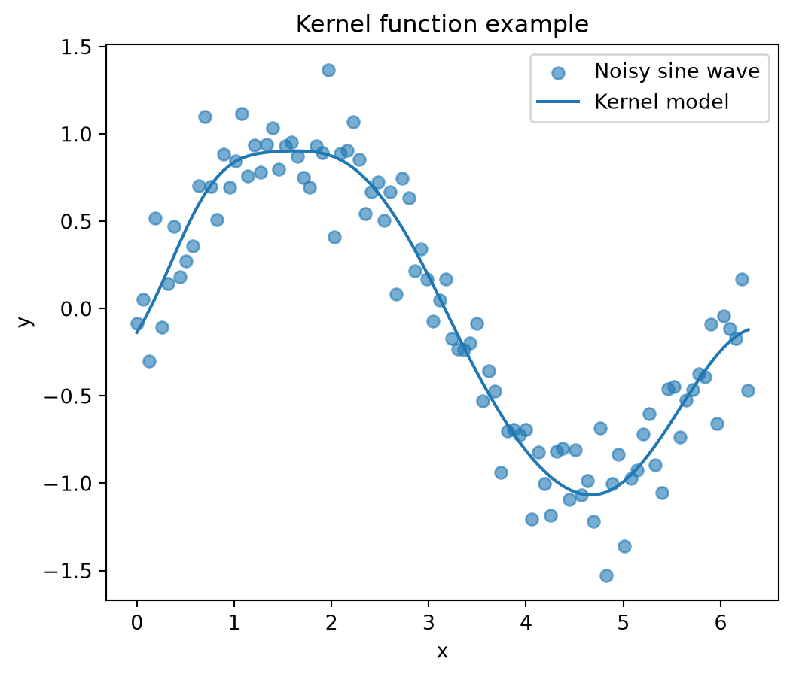

import numpy as np
# simulated dataset of sine wave
np.random.seed(1)
x = np.linspace(0, 6, 100)6 Nonlinearity
6.1 Kernel Basis Expansion Method
6.1.1 General Info on Linear Models
One principal factor in understanding that linear models \(\neq\) linear relationship is that the “linear” in linear model refers to the linearity in the parameters \(\beta\), not in the predictors \(x\). Basis expansion is one way to use a linear model to find understand relationships between nonlinear variables. Basis expansion does this by adding additional functions of \(x\) to the linear model. Consider the standard linear model and its variance. \[ E[Y \mid x] = \beta_0 + \sum_{j=1}^{p} \beta_j x_j \] \[ \operatorname{Var}(Y \mid x) = \sigma^2 \]
When using basis expansion, \(x\) is transformed into a set of derived features \(b_1(x), b_2(x), \ldots, b_k(x)\). Then the linear model can be re-written as follows: \[ E[Y \mid x] = \beta_0 + \sum_{j=1}^{k} \beta_j b_j(x) \]
6.1.2 Kernels
Kernel basis functions are the same function \(K\), placed at different locations in the range of \(x\), also called knots. The knot locations can be denoted by \(c_1, \ldots, c_M\). The basis functions for kernels take the following form. \[ b_i(x) = K (x - c_i) \] where, \(K(x)\) is a kernel function
Kernel basis functions are typically symmetric and continuous. A common choice is the Gaussian kernel, \(K(u) = e^{-u^2/2}\).
Kernel functions also typically use a hyperparameter, \(h\) to consider the basis functions at wider or narrower scales. The kernel basis function can be re-written in the following form with the hyperparameter. \[ b_i(x) = K\left(\frac{x-c_i}{h}\right) \]
This kernel function can then be substituted into the linear model as the following. \[ E[Y \mid x] = \beta_0 + \sum_{j=1}^{k} \beta_i K\left(\frac{x-c_i}{h}\right) \]
Linear combinations of multiple kernel functions can be used in a model, depending on the dataset. At the tails of the dataset, the model reverts back to a value of \(\beta_0\).
Many options can be used for the kernel function, including any function proportional to a density function.
A plot was also created to show how kernel functions sum to create the regression equation. For this example, 3 kernel functions were used. First, a simulated dataset was created from 0 to 6.
Next, 3 kernel functions were created by defining their centers, c, widths, h, and using a Gaussian equation. The 3 kernel functions were summed to simulate a regression plot.
# select three kernel centers
c_1 = 1
c_2 = 3
c_3 = 4
# select kernel widths
h_1 = 0.5
h_2 = 0.25
h_3 = 1
# define Gaussian kernels
kernel_1 = np.exp(-((x - c_1) / h_1)**2)
kernel_2 = np.exp(-((x - c_2) / h_2)**2)
kernel_3 = np.exp(-((x - c_3) / h_3)**2)
# sum three kernels
kernel_sum = kernel_1 + kernel_2 + kernel_3Finally, a stacked plot was created to show all 3 kernel functions and their summation.
import matplotlib.pyplot as plt
# Create two vertically stacked subplots
fig, axes = plt.subplots(2, 1, figsize=(6, 5), sharex=True)
# Top subplot: sum of the three kernels
axes[0].plot(x, kernel_sum, label="Sum of Three Kernels", linewidth=2.5)
axes[0].set_title("Sum of Three Gaussian Kernels")
axes[0].set_ylabel("Kernel value")
axes[0].legend()
axes[0].grid(True, alpha=0.3)
# Bottom subplot: individual kernels
axes[1].plot(x, kernel_1, label="Kernel 1")
axes[1].plot(x, kernel_2, label="Kernel 2")
axes[1].plot(x, kernel_3, label="Kernel 3")
axes[1].set_title("Individual Gaussian Kernels")
axes[1].set_xlabel("x")
axes[1].set_ylabel("Kernel value")
axes[1].legend()
axes[1].grid(True, alpha=0.3)
plt.tight_layout()
plt.show()
6.2 Computation
6.2.1 Simulated Dataset
A simulated dataset was used to show the code implementation of each of the basis expansion methods. The dataset used was a noisy sine wave. The sine wave was created over a single period from 0 to \(2\pi\). Random noise was generated from a normal distribution with a mean of 0 and standard deviation of 0.2. This random noise was added to the noise wave to produce the example dataset. The dataset was then plotted.
import numpy as np
import matplotlib.pyplot as plt
# generate one period of a sine wave
np.random.seed(2)
x = np.linspace(0, 2 * np.pi, 100)
X = x.reshape(-1,1)
y_true = np.sin(x)
# add random noise
noise = np.random.normal(0, 0.2, size=len(x))
y = y_true + noise
# plot simulated data
plt.figure(figsize=(6, 4))
plt.scatter(x, y, alpha=0.7, label="Noisy sine wave")
plt.xlabel("x")
plt.ylabel("y")
plt.title("Sample Data")
6.2.2 Polynomials
6.2.2.1 Natural Polynomials
The basic equation for a natural polynomial regression is as follows: \[ E[Y \mid x] = \beta_0 + \beta_1 x + \beta_2 x^2 + \cdots + \beta_d x^d \]
TEXT HERE
from sklearn.linear_model import LinearRegression
from sklearn.preprocessing import PolynomialFeatures
# define natural polynomial degree
nat_pol_deg = 3
# create natural polynomial model
nat_poly = PolynomialFeatures(degree = nat_pol_deg)
X_poly = nat_poly.fit_transform(X)
# fit linear regression model
nat_poly_model = LinearRegression()
nat_poly_model.fit(X_poly, y)LinearRegression()In a Jupyter environment, please rerun this cell to show the HTML representation or trust the notebook.
On GitHub, the HTML representation is unable to render, please try loading this page with nbviewer.org.
Parameters
Fitted attributes
TEXT HERE
# make predictions
y_pred_nat_poly = nat_poly_model.predict(X_poly)
# plot results
plt.figure(figsize=(6, 5))
plt.scatter(x, y, alpha=0.6, label="Noisy sine wave")
plt.plot(x, y_pred_nat_poly, label="Natural Polynomial model")
plt.xlabel("x")
plt.ylabel("y")
plt.title("Natural Polynomial Example")
plt.legend()
plt.show()
6.2.2.2 Bernstein Polynomials
TEXT
6.2.2.3 Orthogonal Polynomials
TEXT
6.2.3 Splines
6.2.3.1 Linear Splines
TEXT
6.2.3.2 Cubic Natural Splines
TEXT
6.2.3.3 Restricted Cubic Splines
TEXT
6.2.4 Kernels
The rbf_kernel library from sklearn was used to construct the kernel functions. A total of 10 kernel functions were used. Their centers were placed evenly across the range of x, from 0 to \(2\pi\). The hyperparameter \(h\) was set to 0.5 for all kernel functions.
from sklearn.metrics.pairwise import rbf_kernel
# number of kernel functions used
M = 10
# place centers evenly across x
centers = np.linspace(x.min(), x.max(), M)
# hyperparameter, h, or width of kernel functions
h = 0.5Then the \(h\) hyperparameter was converted to the \(\gamma\) hyperparameter needed for the kernel function in the rbf_kernel library. Then the kernel functions were calculated.
# convert h to gamma hyperparameter from sklearn rbf_kernel library
gamma = 1 / (2 * h**2)
# convert x and centers into 2D arrays
X = x.reshape(-1, 1)
C = centers.reshape(-1, 1)
# calculate kernel functions
X_kernel = rbf_kernel(X, C, gamma=gamma)Finally, the kernel model was fit and used to make predictions. The resulting model was included on the plot with the noisy sine data to show its effectiveness.
from sklearn.linear_model import LinearRegression
# fit model
model_kernel = LinearRegression()
model_kernel.fit(X_kernel, y)
# make predictions
y_pred_kern = model_kernel.predict(X_kernel)
# plot results
plt.figure(figsize=(6, 5))
plt.scatter(x, y, alpha=0.6, label="Noisy sine wave")
plt.plot(x, y_pred_kern, label="Kernel model")
plt.xlabel("x")
plt.ylabel("y")
plt.title("Kernel function example")
plt.legend()
plt.show()